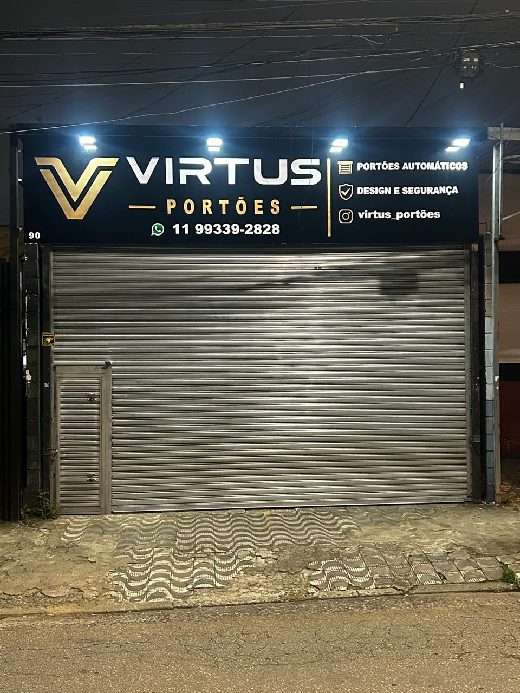
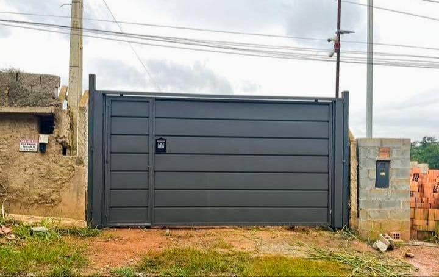
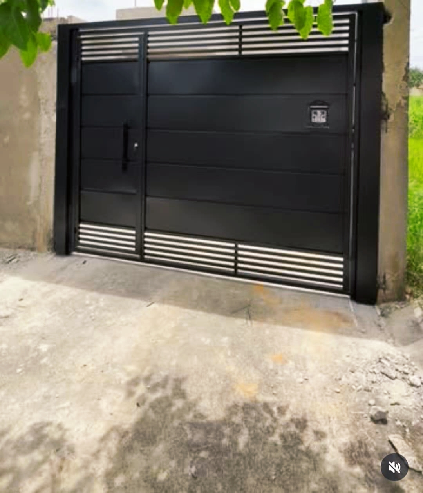
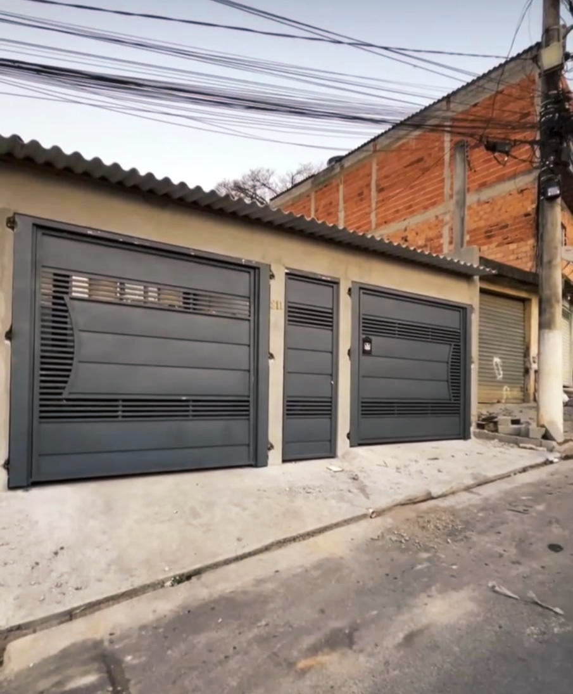
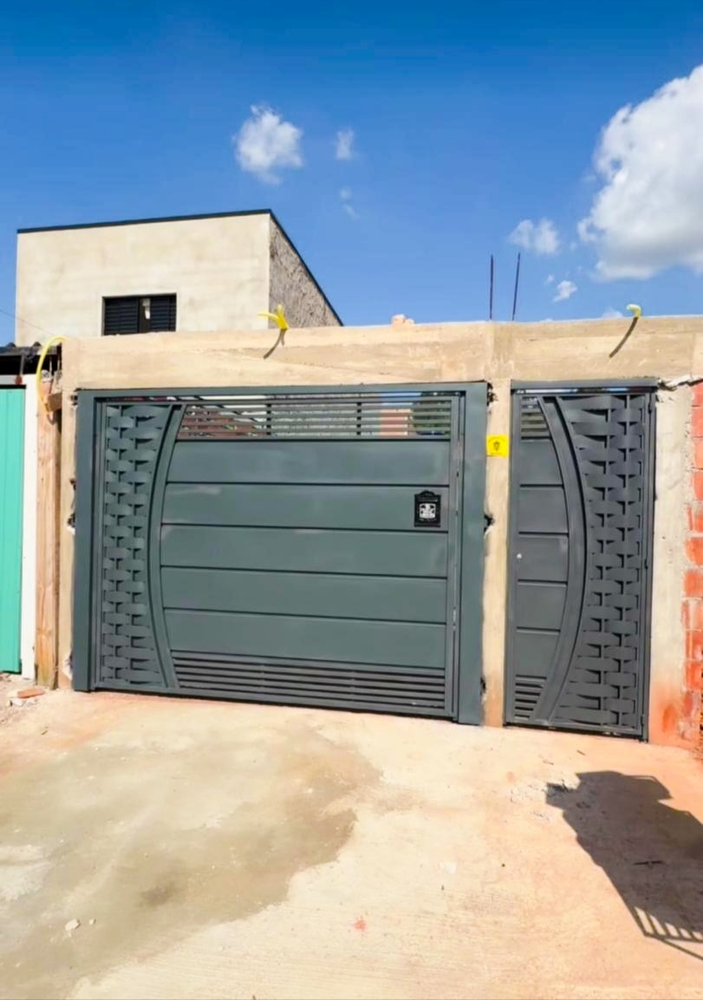

Portões automáticos
Projetos de portões com automatização para facilitar o dia a dia e trazer mais praticidade.
Soluções em portões automáticos com atenção aos detalhes, acabamento profissional e instalação. Fale com a Virtus Portões e solicite seu orçamento.
Serviços pensados para unir funcionalidade, segurança e um acabamento que valoriza seu imóvel.
Projetos de portões com automatização para facilitar o dia a dia e trazer mais praticidade.
Soluções planejadas conforme as medidas e as necessidades do seu espaço.
Execução e instalação com foco em estrutura, funcionamento e acabamento.
Veja algumas opções de portões, grades e corrimãos. Os modelos podem ser adaptados às medidas e ao estilo do seu imóvel. Peça um orçamento personalizado.





Modelos basculantes e de correr, com opção de automatização conforme o projeto.
Consultar modeloGrades sob medida para proteção de janelas, fachadas e outros espaços.
Consultar modeloCorrimãos metálicos para escadas e acessos, com medidas e acabamento personalizados.
Consultar modeloFotos de trabalhos e modelos de referência. Consulte disponibilidade, materiais e acabamentos pelo WhatsApp.
Conte com a gente para conversar sobre seu projeto, avaliar as medidas e encontrar uma solução adequada para sua necessidade.
Fale com a equipeEnvie uma mensagem contando o que você precisa. A Virtus Portões vai poder orientar os próximos passos do seu projeto.
Chamar no WhatsAppEntre em contato para confirmar atendimento e agendar uma avaliação.